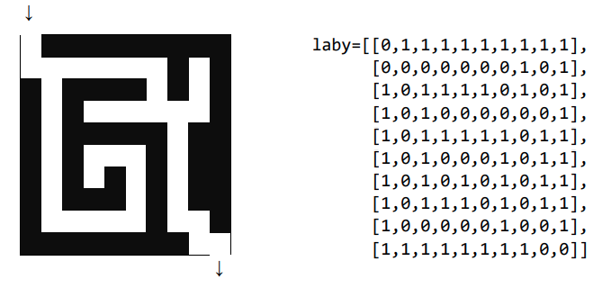
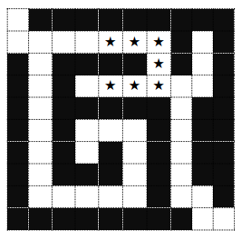
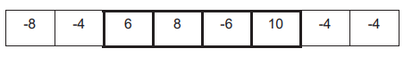
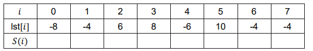
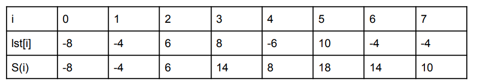

Sujet BAC 17 : Programmation - Tableaux ⚓︎
Cours⚓︎
Vous pouvez télécharger une copie au format pdf du diaporama de synthèse de cours :
Attention
Ce diaporama n'est qu'une synthèse de cours et ne donne que quelques points de repères pour de vos révisions.
Amérique du Nord 2021 J1⚓︎
Tableaux et Programmation
On rappelle que len est une fonction qui prend un tableau en paramètre et renvoie sa longueur.
C’est-à-dire le nombre d’éléments présents dans le tableau.
Exemple : len([12, 54, 34, 57]) vaut 4.
Le but de cet exercice est de programmer différentes réductions pour un site de vente de vêtements en ligne.
On rappelle que si le prix d’un article avant réduction est de x euros,
- son prix vaut 0, 5x si on lui applique une réduction de 50%,
- son prix vaut 0, 6x si on lui applique une réduction de 40%,
- son prix vaut 0, 7x si on lui applique une réduction de 30%,
- son prix vaut 0, 8x si on lui applique une réduction de 20%,
- son prix vaut 0, 9x si on lui applique une réduction de 10%.
Dans le système informatique du site de vente, l’ensemble des articles qu’un client veut acheter, appelé panier, est modélisé par un tableau de flottants.
Par exemple, si un client veut acheter un pantalon à 30,50 euros, un tee-shirt à 15 euros, une paire de chaussettes à 6 euros, une jupe à 20 euros, une paire de collants à 5 euros, une robe à 35 euros et un short à 10,50 euros, le système informatique aura le tableau suivant :
tab = [30.5, 15.0, 6.0, 20.0, 5.0, 35.0, 10.5]
Question 1. (a)
Écrire une fonction Python total_hors_reduction ayant pour argument le tableau des prix des articles du panier d’un client et renvoyant le total des prix de ces articles.
Question 1. (b)
Le site de vente propose la promotion suivante comme offre de bienvenue : 20% de réduction sur le premier article de la liste, 30% de réduction sur le deuxième article de la liste (s’il y a au moins deux articles) et aucune réduction sur le reste des articles (s’il y en a).
Recopier sur la copie et compléter la fonction Python offre_bienvenue prenant en paramètre le tableau tab des prix des articles du panier d’un client et renvoyant le total à payer lorsqu’on leur applique l’offre de bienvenue.
| 🐍 Script Python | |
|---|---|
1 2 3 4 5 6 7 8 9 10 11 12 | |
Pour toute la suite de l’exercice, on pourra utiliser la fonction total_hors_reduction même si la question 1 n’a pas été traitée.
Question 2.
Lors de la période des soldes, le site de vente propose les réductions suivantes :
- si le panier contient 5 articles ou plus, une réduction globale de 50%,
- si le panier contient 4 articles, une réduction globale de 40%,
- si le panier contient 3 articles, une réduction globale de 30%,
- si le panier contient 2 articles, une réduction globale de 20%,
- si le panier contient 1 article, une réduction globale de 10%.
Proposer une fonction Python prix_solde ayant pour argument le tableau tab des prix des articles du panier d’un client et renvoyant le total des prix de ces articles lorsqu’on leur applique la réduction des soldes.
Question 3. (a)
Écrire une fonction minimum qui prend en paramètre un tableau tab de nombres et renvoie la valeur minimum présente dans le tableau.
Question 3. (b)
Pour ses bons clients, le site de vente propose une offre promotionnelle, à partir de 2 articles achetés, l’article le moins cher des articles commandés est offert.
Écrire une fonction Python offre_bon_client ayant pour paramètre le tableau des prix des articles du panier d’un client et renvoyant le total à payer lorsqu’on leur applique l’offre bon client.
Question 4.
Afin de diminuer le stock de ses articles dans ses entrepôts, l’entreprise imagine faire l’offre suivante à ses clients : en suivant l’ordre des articles dans le panier du client, elle considère les 3 premiers articles et offre le moins cher, puis les 3 suivants et offre le moins cher et ainsi de suite jusqu’à ce qu’il reste au plus 2 articles qui n’ont alors droit à aucune réduction.
Exemple : Si le panier du client contient un pantalon à 30,50 euros, un tee-shirt à 15 euros, une paire de chaussettes à 6 euros, une jupe à 20 euros, une paire de collants à 5 euros, une robe à 35 euros et un short à 10,50 euros, ce panier est représenté par le tableau suivant :
tab = [30.5, 15.0, 6.0, 20.0, 5.0, 35.0, 10.5]
Donc le total après promotion de déstockage est 111 euros.
On constate que le prix après promotion de déstockage dépend de l’ordre dans lequel se présentent les articles dans le panier.
Question 4.(a)
Proposer un panier contenant les mêmes articles que ceux de l’exemple mais ayant un prix après promotion de déstockage différent de 111 euros.
Question 4. (b)
Proposer un panier contenant les mêmes articles mais ayant le prix après promotion de déstockage le plus bas possible.
Question 4. (c)
Une fois ses articles choisis, quel algorithme le client peut-il utiliser pour modifier son panier afin de s’assurer qu’il obtiendra le prix après promotion de déstockage le plus bas possible ? On ne demande pas d’écrire cet algorithme.
Réponse
-
a.
🐍 Script Pythondef total_hors_reduction(tab): '''Calcul la somme des éléments de tab''' assert type(tab)==list, "L'argument doit être une liste" thr = 0 for prix in tab: assert type(prix)==int or type(prix)==float,"Les prix doivent être de types numériques" thr += prix return thrb.
🐍 Script Pythondef offre_bienvenue(tab): """ tableau -> float """ somme =0 longueur = len(tab) if longueur > 0: somme = tab[0]* 0,8 if longueur > 1: somme = somme + tab[1] * 0,7 if longueur > 2: for i in range(2,longueur): somme = somme + tab[i] return somme -
🐍 Script Python
def prix_solde(tab): if len(tab)>=5: return total_hors_reduction(tab)*0.5 elif len(tab)==4: return total_hors_reduction(tab)*0.6 elif len(tab)==3: return total_hors_reduction(tab)*0.7 elif len(tab)==2: return total_hors_reduction(tab)*0.8 else: return total_hors_reduction(tab)*0.9 -
a.
🐍 Script Pythondef minimum(tab): min_courant = tab[0] for elt in tab: if elt<min_courant: min_courant = elt return min_courantb.
🐍 Script Pythondef offre_bon_client(tab): if len(tab)>=2: return total_hors_reduction(tab)-minimum(tab) else: return total_hors_reduction(tab) -
a.
🐍 Script Pythontab = [35.0,30.5,20.0,15.0,10.5,5.0,6.0]Le total des prix du panier est de \(35 + 30,5 + 20 + 15 + 10.5 + 6 + 5=122\). Compte tenu de l'ordre des articles les articles coutant 20 € et 5 € seront offerts. Et donc le prix à payer sera 97 €.
b.
🐍 Script PythonLe prix total a payer est de 96 euros.tab = [35.0,30.5,20.0,15.0,10.5,6.0,5.0]c. Il faut trier les objets par ordre décroissant de prix.
France 2021 J1 (21-NSIJ1ME2)⚓︎
!!! exo
Partie A : Représentation d’un labyrinthe⚓︎
On modélise un labyrinthe par un tableau à deux dimensions à ݊\(n\) lignes et ݉\(m\) colonnes avec ݊\(n\) et ݉\(m\) des entiers strictement positifs.
Les lignes sont numérotées de 0 à ݊\(n-1\) et les colonnes de 0 à \(m-1\).
La case en haut à gauche est repérée par \((0,0)\) et la case en bas à droite par \((n-1,m-1)\).
Dans ce tableau :
- 0 représente une case vide, hors case de départ et arrivée,
- 1 représente un mur,
- 2 représente le départ du labyrinthe,
- 3 représente l'arrivée du labyrinthe.
Ainsi, en Python, le labyrinthe ci-dessous est représentée par le tableau de tableaux lab1.

Question A.1.
Le labyrinthe ci-dessous est censé être représenté par le tableau de tableaux lab2.
Cependant, dans ce tableau, un mur se trouve à la place du départ du labyrinthe.
Donner une instruction permettant de placer le départ au bon endroit dans lab2.

réponse
lab2[1][0] = 2
Question A.2.
Écrire une fonction est_valide(i, j, n, m) qui renvoie True si le couple \((i,j)\) correspond à des coordonnées valides pour un labyrinthe de taille \((n,m)\), et False sinon.
On donne ci-dessous des exemples d'appels.
>>> est_valide(5, 2, 10, 10)
True
>>> est_valide(-3, 4, 10, 10)
False
réponse
def est_valide(i,j,n,m):
return i>=0 and j>=0 and i<n and j<m
Question A.3.
On suppose que le départ d'un labyrinthe est toujours indiqué, mais on ne fait aucune supposition sur son emplacement. Compléter la fonction depart(lab)ci-dessous de sorte qu'elle renvoie, sous la forme d'un tuple, les coordonnées du départ d'un labyrinthe (représenté par le paramètre lab).
Par exemple, l'appel depart(lab1) doit renvoyer le tuple (5, 0).
def depart(lab) :
n = len(lab)
m = len(lab[0])
...
réponse
def depart(lab):
n = len(lab)
m = len(lab[0])
for i in range(n):
for j in range(m):
if lab[i][j]==2:
return (i,j)
Question A.4.
Écrire une fonction nb_cases_vides(lab) qui renvoie le nombre de cases vides d'un labyrinthe (comprenant donc l'arrivée et le départ).
Par exemple, l'appel nb_cases_vides(lab2) doit renvoyer la valeur 19.
réponse
def nb_cases_vides(lab):
n = len(lab)
m = len(lab[0])
compt = 0
for i in range(n):
for j in range(m):
if lab[i][j]==2 or lab[i][j]==3 or lab[i][j]==0:
compt = compt + 1
return compt
Partie B : Recherche d’une solution dans un labyrinthe⚓︎
On suppose dans cette partie que les labyrinthes possèdent un unique chemin allant du départ à l’arrivée sans repasser par la même case. Dans la suite, c’est ce chemin que l’on appellera solution du labyrinthe.
Pour déterminer la solution d'un labyrinthe, on parcourt les cases vides de proche en proche.
Lors d’un tel parcours, afin d’éviter de tourner en rond, on choisit de marquer les cases visitées.
Pour cela, on remplace la valeur d'une case visitée dans le tableau représentant le labyrinthe par la valeur 4.
Question B.1.
On dit que deux cases d'un labyrinthe sont voisines si elles ont un côté commun.
On considère une fonction voisines(i, j, lab) qui prend en arguments deux entiers ݅\(i\) et ݆\(j\) représentant les coordonnées d’une case et un tableau lab qui représente un labyrinthe.
Cette fonction renvoie la liste des coordonnées des cases voisines de la case de coordonnées \((i,j)\) qui sont valides, non visitées et qui ne sont pas des murs. L'ordre des éléments de cette liste n'importe pas.
Ainsi, l'appel voisines(1, 1, [[1, 1, 1], [4, 0, 0], [1, 0, 1]]) renvoie la liste [(2, 1), (1, 2)].
Que renvoie l'appel voisines(1, 2, [[1, 1, 4], [0, 0, 0], [1, 1, 0]]) ?
réponse
L’appel de la fonction renvoie : [(2, 2), (1, 1)]
Question 2.
On souhaite stocker la solution dans une liste chemin. Cette liste contiendra les coordonnées des cases de la solution, dans l'ordre. Pour cela, on procède de la façon suivante.
- Initialement :
- déterminer les coordonnées du départ : c'est la première case à visiter ;
- ajouter les coordonnées de la case départ à la liste chemin.
- Tant que l'arrivée n'a pas été atteinte :
- on marque la case visitée avec la valeur 4 ;
- si la case visitée possède une case voisine libre, la première case de la liste renvoyée par la fonction
voisinesdevient la prochaine case à visiter et on ajoute à la liste chemin ; - sinon, il s'agit d'une impasse. On supprime alors la dernière case dans la liste chemin. La prochaine case à visiter est celle qui est désormais en dernière position de la liste chemin.
Question B.2. a.
Le tableau de tableaux lab3 ci-dessous représente un labyrinthe.
lab3 = [[1, 1, 1, 1, 1, 1],
[2, 0, 0, 0, 0, 3],
[1, 0, 1, 0, 1, 1],
[1, 1, 1, 0, 0, 1]]
La suite d'instructions ci-dessous simule le début des modifications subies par la liste chemin lorsque l'on applique la méthode présentée.
# entrée: (1, 0), sortie (1, 5)
chemin = [(1, 0)]
chemin.append((1, 1))
chemin.append((2, 1))
chemin.pop()
chemin.append((1, 2))
chemin.append((1, 3))
chemin.append((2, 3))
Compléter cette suite d'instructions jusqu'à ce que la liste chemin représente la solution.
Rappel : la méthode pop supprime le dernier élément d'une liste et renvoie cet élément.
Question B.2. b.
Recopier et compléter la fonction solution(lab) donnée ci-dessous de sorte qu'elle renvoie le chemin solution du labyrinthe représenté par le paramètre lab.
On pourra pour cela utiliser la fonction voisines.
def solution(lab):
chemin = [depart(lab)]
case = chemin[0]
i = case[0]
j = case[1]
---
Par exemple, l 'appel solution(lab2) doit renvoyer [(1, 0), (1, 1), (1, 2), (1, 3), (1, 4), (1, 5), (2, 5), (3, 5), (4, 5), (5, 5), (6, 5)].
réponse
Question 2.a
# entrée: (1, 0), sortie (1, 5)
chemin = [(1, 0)]
chemin.append((1,1))
chemin.append((2,1))
chemin.pop()
chemin.append((1,2))
chemin.append((1,3))
chemin.append((2,3))
chemin.append((3,3))
chemin.append((3,4))
chemin.pop()
chemin.pop()
chemin.pop()
chemin.append((1,4))
chemin.append((1,5))
Question B.2.b.
def solution(lab):
chemin = [depart(lab)]
case = chemin[0]
i = case[0]
j = case[1]
while lab[i][j] != 3:
lab[i][j]=4
v = voisines(i,j,lab)
if len(v) != 0 :
prochaine = v.pop()
chemin.append(prochaine)
i = prochaine[0]
j = prochaine[1]
else :
chemin.pop()
n = len(chemin)
i = chemin[n-1][0]
j = chemin[n-1][1]
return chemin
Centres Etrangers 2021 J2 (21-NSIJ2G11)⚓︎
Exo
Thèmes abordés
- programmation Python
- tuples
- listes.
L’objectif de cet exercice est de mettre en place une modélisation d’un jeu de labyrinthe en langage Python.
On décide de représenter un labyrinthe par un tableau carré de taille n, dans lequel les cases seront des 0 si l’on peut s’y déplacer et des 1 s’il s’agit d’un mur. Voici un exemple de représentation d’un labyrinthe :

L’entrée du labyrinthe se situe à la première case du tableau (celle en haut à gauche) et la sortie du labyrinthe se trouve à la dernière case (celle en bas à droite).
Question 1.
Proposer, en langage Python, une fonction mur, prenant en paramètre un tableau représentant un labyrinthe et deux entiers \(i\) et \(j\) compris entre 0 et n1 et qui renvoie un booléen indiquant la présence ou non d’un mur. Par exemple :
>>mur(laby, 2, 3)
True
>>mur(laby, 1, 8)
False
réponse
def mur(laby,lig,col):
return laby[lig][col]=="1"
Note
La version ci-dessous est équivalente, mais on teste si un booléen vaut True et dans ce cas on renvoie True, sinon on renvoie False. Renvoyer directement le booléen (c'est à dire le résultat du test laby[lig][col]=="1" est plus concis).
def mur(laby,lig,col):
if laby[lig][col]=="1":
return True
else:
return False
Un parcours dans le labyrinthe va être représenté par une liste de cases. Il s’agit de couples (i,j) où i et j correspondent respectivement aux numéros de ligne et de
colonne des cases successivement visitées au long du parcours. Ainsi, la liste suivante [(1,4),(1,5),(1,6),(2,6),(3,6),(3,5),(3,4)] correspond au parcours repéré par des étoiles ci-dessous :

La liste [(0,0),(1,0),(1,1),(5,1),(6,1)] ne peut correspondre au parcours d’un labyrinthe car toutes les cases parcourues successivement ne sont pas adjacentes.
Question 2.
On considère la fonction voisine ci-dessous, écrite en langage Python, qui prend en paramètres deux cases données sous forme de couple.
def voisine(case1, case2) :
l1, c1 = case1
l2, c2 = case2
# on vous rappelle que **2 signifie puissance 2
d = (l1-l2)**2 + (c1-c2)**2
return (d == 1)
2.a. Après avoir remarqué que les quantités l1-l2 et c1-c2 sont des entiers, expliquer pourquoi la fonction voisine indique si deux cases données sous forme de tuples (l,c) sont adjacentes.
2.b. En déduire une fonction adjacentes qui reçoit une liste de cases et renvoie un booléen indiquant si la liste des cases forme une chaîne de cases adjacentes.
réponse
Solution 2.a
Deux cases du labyrinthe sont adjacentes lorsqu'elles sont situées sur la même ligne et la différence entre les colonnes est de 1 ou alors lorsqu'elles sont situées sur la même colonne et la différence entre les lignes est 1. On peut donc calculer d = (l1-l2)**2 + (c1-c2)**2, si les cases sont adjacentes l'un des deux termes de cette somme vaut 0 et l'autre 1 (si la différence est \(-1\), d vaut 1 à cause de du carré). Le test d==1 permet donc de savoir si deux cases sont adjacentes.
Solution 2.b
def adjacentes(liste_cases):
for i in range(len(liste_cases)-1):
if not voisine(liste_cases[i],liste_cases[i+1]):
return False
return True
Question 3.
Justifier que la boucle de la fonction précédente se termine.
réponse
On rentre dans la boucle lorsque i < len(cases), l'indice i est incrémenté dans la boucle et donc finira par être plus grand que la longueur du tableau cases.
Note
On rappelle que la méthode rigoureuse pour montrer la terminaison d'un boucle est d'exhiber un variant de boucle c'est à dire une quantité \(v\) entière positive qui décroît à chaque passage dans la boucle. La propriété mathématique :
Il n'existe pas de suite d'entiers positif strictement décroissante permet alors de conclure à la terminaison de la boucle (sinon les valeurs successives prises par \(v\) formeraient une suite d'entiers positif décroissante, ce qui est impossible).
Question 4.
En déduire une fonction echappe(cases, laby) qui indique par un booléen si le chemin cases permet d’aller de l’entrée à la sortie du labyrinthe laby.
réponse
D'après l'énoncé, le labyrinthe est carré, on récupère sa taille n puis on teste que les trois conditions suivantes sont réunies :
- On démarre bien de l'entrée du labyrinthe (case
(0,0)) - On finit bien sur la sortie du labyritnhe (case
(n-1,n-1)) - Les cases de la liste sont adjacentes et non murées.
def echappe(cases,laby):
n = len(laby)
return cases[0]==0 and cases[-1]==(n-1,n-1) and teste(cases,laby):
Adaptation en TP : Lien vers TP Capytale
France 2021 J2 (21-NSIJ2ME2)⚓︎
Exo
Étant donné un tableau non vide de nombres entiers relatifs, on appelle sous-séquence une suite non vide d'éléments voisins de ce tableau. On cherche dans cet exercice à déterminer la plus grande somme possible obtenue en additionnant les éléments d'une sous-séquence.
Par exemple, pour le tableau ci-dessous, la somme maximale vaut 18.
Elle est obtenue en additionnant les éléments de la sous-séquence encadrée en gras ci-dessous (6 ; 8 ; -6 ; 10).

Question 1. a.
Quelle est la solution du problème si les éléments du tableau sont tous positifs ?
réponse
Si les éléments du tableau sont tous positifs, il suffit d’additionner tous les éléments du tableau pour obtenir la somme maximale (la sous-séquence correspond à l’ensemble du tableau).
Question 1. b.
Quelle est la solution du problème si tous les éléments sont négatifs ?
réponse
Si les éléments du tableau sont tous négatifs, il suffit de prendre l’élément le plus grand du tableau (la sous-séquence est réduite à un seul élément)
Dans cette question, on examine toutes les sous-séquences possibles.
Question 2. a.
Écrire le code Python d'une fonction somme_sous_sequence(lst, i, j) qui prend en argument une liste et deux entiers i, j et renvoie la somme de la sous-séquence délimitée par les indices i et j (inclus).
réponse
def somme_sous_sequence(lst, i, j):
somme = 0
for ind in range(i,j+1):
somme = somme + lst[ind]
return somme
Question 2. b.
La fonction pgsp ci-dessous permet de déterminer la plus grande des sommes obtenues en additionnant les éléments de toutes les sous-séquences possibles du tableau lst.
def pgsp(lst):
n = len(lst)
somme_max = lst[0]
for i in range(n):
for j in range(i, n):
s = somme_sous_sequence(lst, i, j)
if s > somme_max :
somme_max = s
return somme_max
- 10
- 55
- 100
- 1055
réponse
Pour un tableau de 10 éléments, nous avons 55 comparaisons \((10+9+8+7+6+5+4+3+2+1=55)\).
Question 2. c.
Recopier et modifier la fonction pgsp pour qu'elle renvoie un tuple contenant la somme maximale et les indices qui délimitent la sous-séquence correspondant à cette somme maximale.
réponse
def pgsp(lst):
n = len(lst)
somme_max = lst[0]
i_max = 0
j_max = 0
for i in range(n):
for j in range(i,n):
s = somme_sous_sequence(lst,i,j)
if s > somme_max:
somme_max = s
i_max = i
j_max = j
return (somme_max, i_max, j_max)
Question 3.
On considère dans cette question une approche plus élaborée. Son principe consiste, pour toutes les valeurs possibles de l’indice ݅, à déterminer la somme maximale ܵ(݅) des sous-séquences qui se terminent à l'indice ݅.
En désignant par lst[݅] l’élément de lst d’indice ݅, on peut vérifier que
- S(0) = lst[0]
- et pour ݅\(i \geq 1\) :
- \(Sܵ(i) = lst[݅i]\) si ܵ\((݅i- 1) ≤ 0\) ;
- \(i = lst[݅i] + ܵS(݅i-1)\) si ܵ\(S(݅i-1) > 0\).
Question 3. a.
Recopier et compléter le tableau ci-dessous avec les valeurs de ܵ\(S(݅i)\) pour la liste considérée en exemple.

réponse

Question 3. b.
La solution au problème étant la plus grande valeur des ܵ\(S(݅i)\), on demande de compléter la fonction pgsp2 ci-dessous, de sorte que la variable sommes_max contienne la liste des valeurs ܵ\(S(݅i)\).
def pgsp2(lst):
sommes_max = [lst[0]]
for i in range(1, len(lst)):
# à compléter
return max(sommes_max)
réponse
def pgsp2(lst):
somme_max = [lst[0]]
for i in range (1,len(lst)):
if somme_max[i-1] <= 0:
somme_max.append(lst[i])
else :
somme_max.append(lst[i]+somme_max[i-1])
return max(somme_max)
Question 3. c.
En quoi la solution obtenue par cette approche est-elle plus avantageuse que celle de la question 2.b. ?
réponse
Cette solution est plus avantageuse, car la complexité en temps de l’algorithme est en \(O(n)\) alors que dans le cas précédent il était en \(O(n^2)\).
Amérique du Nord 2022 J1 (21-NSIJ1AN1)⚓︎
Programamtion
Thèmes abordés
- Programamtion
- chaînes de caractères
- tablaux
- parcours.
On appelle palindrome un texte dont l'ordre des lettres reste le même, qu'on le lise de la droite vers la gauche ou de la gauche vers la droite.
Par exemple, un mot à une lettre est un palindrome, "BOB" est un palindrome, tout comme "LAVAL".
Le mot "" est considéré comme un palindrome.
On souhaite programmer une fonction palindrome qui prend en paramètre une chaîne de caractères txt. Cette fonction renvoie True si la chaîne de caractères txt est un palindrome, False sinon.
Question 1.
On donne ci-dessous une implémentation récursive incomplète pour la fonction palindrome. L'opération+ à la ligne 8 permet de concaténer deux chaînes de caractères.
Exemple : Si txt1 = "bon" et txt2 = "jour", l'instruction txt1 + txt2 renvoie la chaîne de caractères "bonjour"
| 🐍 Script Python | |
|---|---|
1 2 3 4 5 6 7 8 9 | |
(a) Choisir parmie les propositions ci-dessous celle qui convient pour compléter la fonction palindrome (ligne 3 et 4)
-
Proposition 1
🐍 Script Pythonif len(txt)<=2: return True -
Proposition 2
🐍 Script Pythonif len(txt)<2: return False -
Proposition 3
🐍 Script Pythonif len(txt)<2: return True -
Proposition 4
🐍 Script Pythonif len(txt)<=2: return False
(b) Lors de l'appel de palindrome("bonjour"), indiquer les valeurs, à la ligne 9, de : txt[O] , txt[taille - 1] et interieur.
Question 2.
Proposer deux tests pour cette fonction qui permettent de tester deux cas de figure différents en justifiant ce choix.
Question 3.
Ecrire une version non récursive de la fonction palindrome.
Question 4.
On étudie dans cet exercice des chaines de caractères utilisant uniquement les lettres "A", "T", "C" et "G".
Exemple "AA", "CAT" et "CCGATACG"
On associe à chacune de ces lettres une autre lettre appelée lettre complémentaire selon le tableau suivant :
| Lettre | "A" | "T" | "G" | "C" |
|---|---|---|---|---|
| Lettre complémentaire | "T" | "A" | "C" | "G |
On obtient le complémentaire d'un mot en remplaçant chacune de ses lettres par sa lettre complémentaire.
Exemple : Le complémentaire à "GAATTC" est "CTTAAG".
(a) Écrire une fonction en Python, nommée complementaire, qui prend en paramètre une chaîne de caractères txt écrite uniquement avec les lettres "A", "C", "G" et "T"? Cette fonction renvoie la chaîne de caractères complémentaire de txt
Exemple : l'appel complementaire("GAATTC") renvoie "CTTAAG"
(b) Une chaîne de caractères txt est dite palìndromique si la concaténation de txt avec son complémentaire est un palindrome.
Exemples: "GAATTC" est palindromique car "GAATTC" + "CTTAAG" = "GAATTCCTTAAG" est un palindrome.
"GAAT" n'est pas palindromique car "GAAT" + "CTTA" = "GAATCTTA" n'est pas un palin drome.
Déterminer si la chaîne de caractères "GATCGT" est palindromique.
(c) Ecrire une fonction est_palindromique prenant comme paramètre une chaîne de caractères txt. Cette fonction doit renvoyer True s'il agit d'une séquence palindromique, False sinon.